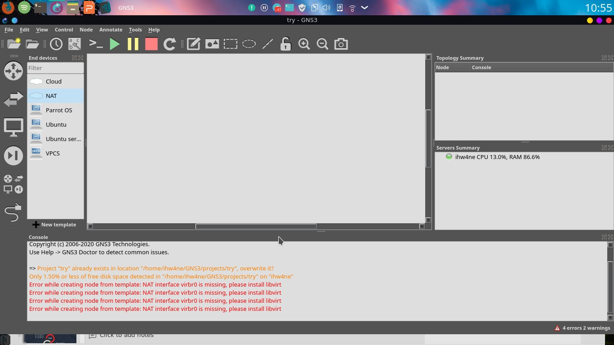

Mengatasi Pesan “Error while creating node from template: nat interface virbr0 is missing, please install libvirt”
Libvirt is collection of software that provides a convenient way to manage virtual machines and other virtualization functionality, such as storage and network interface management. These software pieces include a long term stable C API, a daemon (libvirtd), and a command line utility (virsh). A primary goal of libvirt is to provide a single way to manage multiple different virtualization providers/hypervisors, such as the KVM/QEMU, Xen, LXC, OpenVZ or VirtualBox hypervisors (among others).
Klik disini [Refensi Tambahan dari Wiki Arch: Libvirtd]Seperti pada pesan: "Error while creating node from template: NAT interface virbr0 is missing, please install libvirt." Dimana penulis juga mangalami pesan error pada saat akan menambahkan NAT ke workspace GNS3. Setelah penulis melakukan googling sampai pada masuk salah satu forum linux untuk problem solving, akhirnya bertemu menemukan masalahnya. Libvirt seperti yang dijelaskan berfungsi mengatur administrasi virtual machines. Salah satu dari Fiktur libvirt, Virtual NAT and Route based networking: Any host running the libvirt daemon can manage and create virtual networks. Libvirt virtual networks use firewall rules to act as a router, providing VMs transparent access to the host machines network. Simpel permasalahannya adalah karena depedency libvirt belum ter-install dan diperlukan konfigurasi lanjutan. Langsung saja langkah-langkahnya:
Pertama, lakukan peng-installan depedency libvirt dengan cara
$ sudo pacman -S libvirt
Selanjutnya set up Virtual NAT Device untuk libvirt dengan cara membuat file /tmp/default.xml
sudo nano /tmp/default.xml
Sebagai catatan kaki, definisi tiap layer pada protokol TCP/IP maupun OSI adalah sama. Oleh karena itu penulis tidak menyajikan penjelasan tiap lapisan di kedua protokol.


Lebih sering Update dong!!!